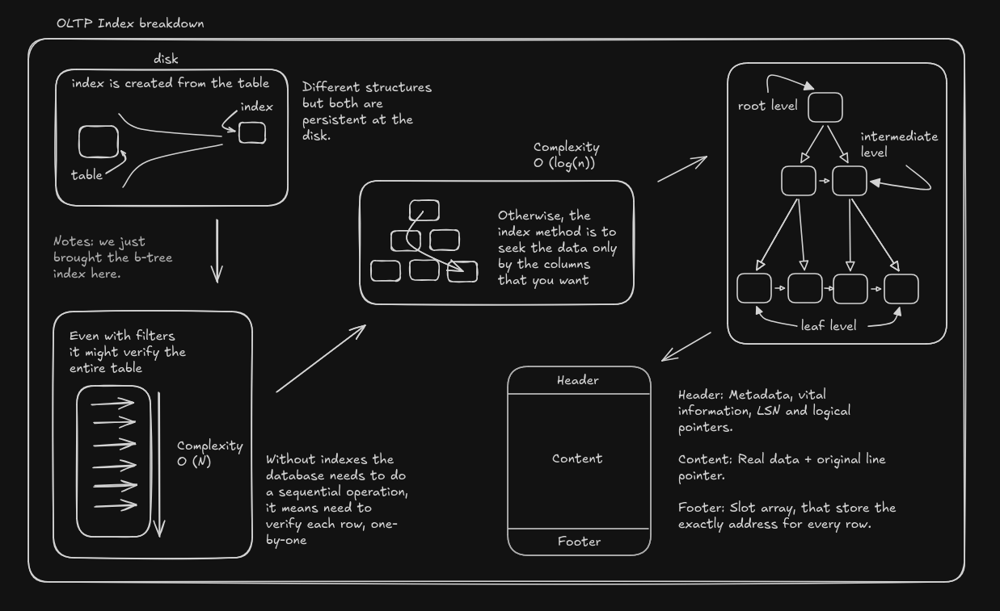

Índices: Tipos, Estruturas e Internals
1. O que é um índice?
Um índice é uma estrutura de dados persistida em disco, construída a partir de uma ou mais colunas de uma tabela. Seu propósito exclusivo é otimizar a recuperação de registros, minimizando a quantidade de acessos a disco (I/O) necessários para localizar uma informação. Fisicamente, o índice é uma entidade separada da tabela de dados que ele indexa.
2. Por que o banco de dados exige índices?
Sem um índice, a engine do banco de dados é forçada a realizar uma varredura sequencial. No SQL Server, isso é chamado de Table Scan (em Heaps) ou Clustered Index Scan. No PostgreSQL, é o Seq Scan.
A varredura sequencial lê todas as páginas de dados da tabela a partir do disco para a memória RAM, avaliando o filtro linha por linha. A complexidade matemática dessa operação é O(N). Ao implementar um índice, a engine localiza os dados através de navegação em árvore, reduzindo o custo matemático da busca para O(log N). A ausência de índices em tabelas massivas causa saturação de CPU, contenção de I/O e esgotamento da memória cache.
3. Tipos e Motores de Índices (PostgreSQL vs. SQL Server)
A diferença arquitetural primária entre os dois motores reside na forma como os dados base são armazenados. O SQL Server trabalha fundamentalmente com o Clustered Index (onde a tabela é o próprio índice ordenado no nível folha). O PostgreSQL não possui esse conceito estrito; nele, todas as tabelas são Heaps, e todo índice atua de forma análoga a um Non-Clustered Index do SQL Server.
Abaixo estão os algoritmos e motores de indexação suportados por cada plataforma:
Árvore Balanceada (B-Tree)
O padrão absoluto para operações transacionais diárias de alta concorrência.
- SQL Server: Utilizado para criar tanto índices Clustered quanto Non-Clustered baseados em disco.
- PostgreSQL: Motor padrão ao se omitir o tipo na declaração
CREATE INDEX.
Motores para Grandes Volumes e Consultas Analíticas
Quando a árvore balanceada se torna ineficiente para tabelas de múltiplos terabytes, as engines adotam estratégias distintas:
- SQL Server (Columnstore): Estrutura física focada em repositórios analíticos. Armazena dados em colunas (em vez de linhas) divididas em segmentos compactados, reduzindo drasticamente o I/O em queries de agregação massiva.
- PostgreSQL (Índice de Intervalo de Blocos (Block Range)): Desenhado para séries temporais e dados inseridos de forma sequencial. Em vez de indexar linha por linha, este modelo armazena apenas o valor mínimo e máximo de blocos físicos adjacentes (ex: intervalos de 1 MB). Permite pular milhões de linhas na leitura com um consumo de memória ínfimo.
Índices de Dispersão (Hash)
Específicos para operadores de igualdade estrita (=), não servindo para buscas de intervalo (> ou <).
- SQL Server: Exclusivo e obrigatório para tabelas otimizadas para memória residente na RAM. Não aplicável a tabelas baseadas em disco clássicas.
- PostgreSQL: Implementado nativamente como um tipo de índice em disco suportado pelo mecanismo padrão.
Estruturas Complexas (JSON, XML e Arrays)
A indexação de documentos e coleções internas exige motores que compreendam sub-elementos textuais ou estruturados.
- SQL Server: Utiliza Índices XML (estruturados sobre árvores internas) e, para JSON, depende da extração de propriedades em colunas computadas indexadas ou do serviço de Pesquisa de Texto Completo, que opera como um processo de sistema externo ao motor relacional clássico.
- PostgreSQL (Índice Invertido Generalizado): Funciona de forma análoga ao índice remissivo de um livro. É capaz de extrair e indexar múltiplos valores independentes dentro de uma única linha, sendo o motor definitivo para operações de alta performance em campos
JSONB, matrizes bidimensionais e pesquisa de texto nativa.
Dados Espaciais e Geométricos
- SQL Server: Utiliza Índices Espaciais, baseados em técnicas de tesselação (decomposição de espaço bidimensional em grades matemáticas).
- PostgreSQL: Conta com o motor de Árvore de Busca Generalizada, uma estrutura genérica que permite a implementação de indexação para dados irregulares que se sobrepõem, como polígonos e coordenadas geográficas (fortemente utilizado pela extensão PostGIS).
4. O Interno: Páginas, Construção e Estrutura Balanceada
A Anatomia Genérica de uma Página
Tanto o SQL Server quanto o PostgreSQL estruturam o armazenamento de tabelas e índices em blocos fixos de I/O chamados Páginas, que por padrão possuem 8 KB de tamanho. Embora existam diferenças estruturais nos bytes de controle de cada SGBD, genericamente, uma página é dividida em três sessões fundamentais:
- Cabeçalho (Page Header): Ocupa os primeiros bytes do bloco. Contém metadados vitais, como o ID do objeto a qual a página pertence, a quantidade de espaço livre restante, marcadores de transação (como o número de sequência de log) e ponteiros lógicos para a página anterior e a próxima página (formando uma lista duplamente encadeada estrutural).
- Corpo de Dados (Tuplas/Registros): É a área central da página, onde os dados reais residem e crescem de cima para baixo. Em uma página de tabela (Heap), são as colunas da linha. Em uma página de índice, o corpo de dados contém estritamente a chave indexada mais um ponteiro identificador para a linha original.
- Vetor de Deslocamento (Row Offset Array): Fica posicionado no final da página (rodapé) e cresce de baixo para cima. É um vetor de mapeamento que armazena o endereço (o byte exato) onde cada registro começa dentro da página. Isso permite que a CPU execute uma busca binária ultrarrápida dentro do próprio bloco de 8 KB na memória RAM, sem precisar varrer registro por registro internamente.
A Construção da Estrutura (Como o Índice Extrai os Dados)
Ao executar um comando CREATE INDEX, o índice não é criado por mágica; ele é fisicamente construído a partir de uma cópia dos dados da tabela. O motor do banco de dados executa uma leitura profunda na tabela base e extrai exclusivamente os valores das colunas declaradas no índice, juntamente com seus respectivos ponteiros identificadores. Esses dados extraídos são alocados na memória RAM (em áreas de ordenação) e rigorosamente ordenados.
Com os dados ordenados, o motor constrói a estrutura em árvore de baixo para cima:
- Ele preenche e encadeia as páginas do Nível Folha contendo todos os dados já ordenados.
- Em seguida, gera as páginas do Nível Intermediário, que armazenam apenas o menor valor de cada página folha para servir de "placa de sinalização" direcional.
- Por fim, condensa essas rotas até formar uma única página de Raiz, o ponto de entrada de todas as consultas.
Mecânica da Árvore Balanceada
É uma estrutura perfeitamente distribuída, garantindo que a profundidade (a distância exata entre a Raiz e os níveis Folha) de todos os ramos seja idêntica. Isso estabiliza o tempo de resposta da leitura em disco independentemente do registro buscado.
- Performance: Altamente otimizada para operadores matemáticos (
<,<=,=,>=,>). O uso de funções aplicadas diretamente sobre as colunas indexadas na cláusulaWHEREanula a capacidade da engine de navegar eficientemente pelos nós da árvore, forçando uma custosa varredura completa do índice.
5. Como os Dados e os Índices se Comunicam
A localização física do dado exige um ponteiro interno para conectar o índice (a cópia reduzida e ordenada) à tabela principal (o dado bruto e completo). No SQL Server, um índice Non-Clustered utiliza a chave do índice Clustered como ponteiro para localizar o registro na árvore principal. No PostgreSQL (que trabalha fundamentalmente com Heaps não ordenados), a arquitetura utiliza o Identificador Físico de Registro.
O Identificador Físico de Registro
Esse identificador é uma coordenada estrutural precisa composta por dois valores de hardware: (Número do Bloco de 8KB, Posição do Registro no Bloco).
- O nó folha da árvore no PostgreSQL armazena a chave indexada atrelada ao seu identificador correspondente.
- A engine de execução lê a chave no índice, extrai o identificador e acessa o disco indo diretamente à página e linha exatas na tabela bruta para coletar as colunas ausentes.
O Controle de Concorrência e o Mapa de Visibilidade
No SQL Server, travas de registro e página gerenciam a concorrência. No PostgreSQL, o controle de concorrência multiversão mantém fisicamente vivas no disco versões antigas de linhas atualizadas ou apagadas para garantir que leituras de outras transações não sejam bloqueadas.
O índice no PostgreSQL não armazena informações sobre qual transação tem permissão para enxergar a linha. Assim, mesmo em um cenário onde a consulta exige apenas as colunas que já estão presentes dentro do próprio índice, a engine precisaria visitar fisicamente a página da tabela principal para checar os metadados de transação e garantir que a linha lida não foi apagada por um processo concorrente recente. Para mitigar essa pesada penalidade de leitura em disco, o PostgreSQL utiliza o Mapa de Visibilidade, uma estrutura de bits que indica se todos os registros de um bloco de 8KB específico são universalmente visíveis e definitivos. Se o bit estiver marcado afirmativamente, a engine confia apenas nos dados extraídos do índice e anula a necessidade de visitar a tabela principal.
Para uma experiência mais visual, para você, profissional atuante em bancos de dados transacionais que nunca visualizou as engrenagens internas de uma indexação, recomendo começar pela arquitetura clássica da árvore balanceada. Siga as setas na imagem abaixo para consolidar os conceitos estruturais discutidos:

6. Implementação Prática (Sintaxe de Indexação)
Os exemplos abaixo demonstram o controle granular na criação e manutenção dessas estruturas de otimização.
-- SQL SERVER - Criação de Índice Secundário com colunas agregadas (Covering Index)
CREATE NONCLUSTERED INDEX idx_sales_date
ON Sales (OrderDate)
INCLUDE (TotalAmount, CustomerID);
-- POSTGRESQL - A sintaxe estruturalmente equivalente ao Covering Index
CREATE INDEX idx_sales_date
ON sales (order_date)
INCLUDE (total_amount, customer_id);
-- SQL SERVER - Criação de índice mantendo a tabela disponível para escrita (Evita Travas)
CREATE INDEX idx_customers_status
ON Customers (Status)
WITH (ONLINE = ON);
-- POSTGRESQL - A sintaxe equivalente para criação sem exigir bloqueio exclusivo da tabela
CREATE INDEX CONCURRENTLY idx_customers_status
ON customers (status);
-- POSTGRESQL - Criação de Índice Invertido Generalizado para estruturação de campos JSONB
CREATE INDEX idx_products_attributes
ON products USING GIN (attributes_jsonb);
-- SQL SERVER - Criação de Índice Colunar para leitura maciça de grandes volumes
CREATE NONCLUSTERED COLUMNSTORE INDEX idx_cs_analytics
ON FactTable (DimDate, MeasureValue);
-- POSTGRESQL - Criação de Índice de Intervalo de Blocos para registros de séries temporais
CREATE INDEX idx_sensor_metrics
ON sensor_data USING BRIN (recorded_timestamp);Obrigado pela leitura e até o próximo artigo!